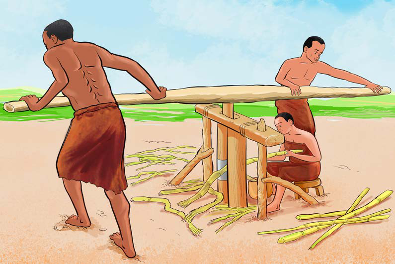

Pia, jamii za Wapare zilitengeneza mashine asilia za kukamulia
juisi ya miwa kwa kutumia miti.
Miti migumu miwili iliwekwa kwa namna ya kupishana, na mti mrefu
uliwekwa juu kwa ajili ya kuizungusha mashine wakati muwa ukiwa katikati ya miti wiwili ili kukamua
juisi.
Kielelezo namba 24, kinawasilisha mfano wa mashine za asili za
kukamulia juisi ya miwa.

Kielelezo namba 24: Mashine ya kukamulia juisi ya miwa
Kazi ya kufanya namba 12
Jadili namna ya kuendeleza sayansi na teknolojia ya uchongaji kwa maendeleo ya
jamii za sasa.
Sayansi na teknolojia asilia za utayarishaji chumvi
Jamii za kale zilitumia sayansi na teknolojia asilia kuzalisha
chumvi.
Mfano, chumvi ilitengenezwa kwa kuchemsha maji yenye asili ya
chumvi.
Baada ya maji kuchemka na kukaukia, mabaki yake yalichujwa ili
kupata chumvi.
69